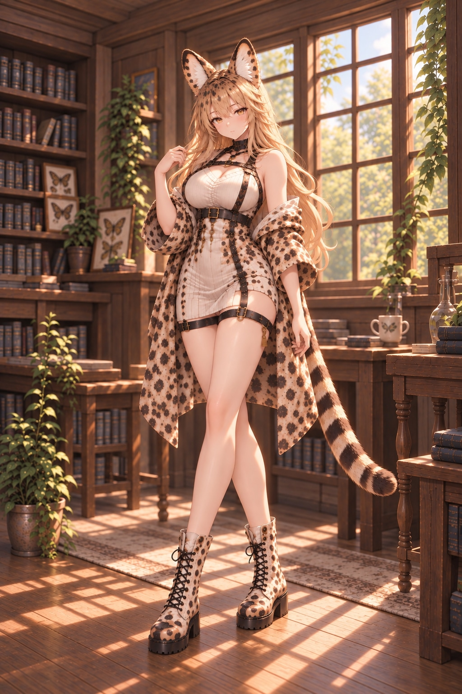
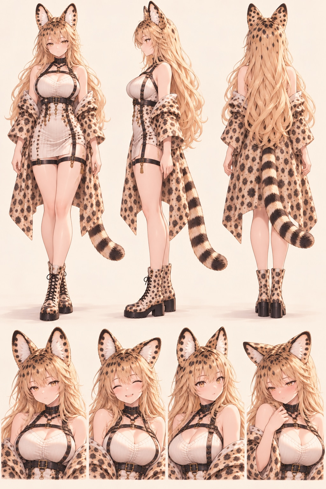
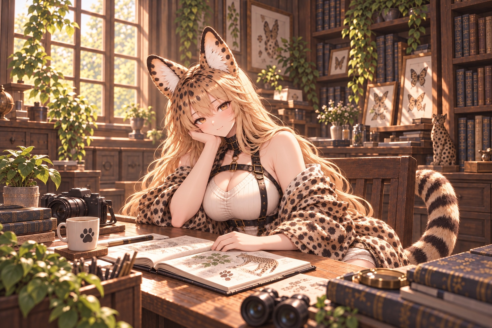
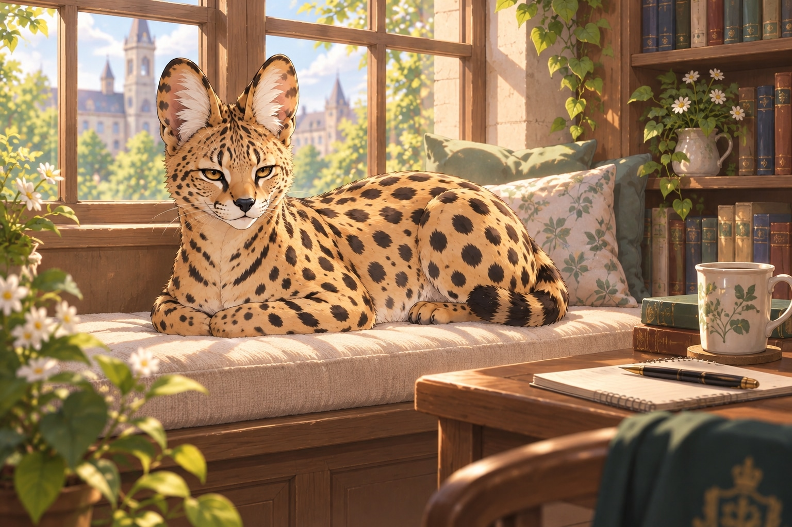
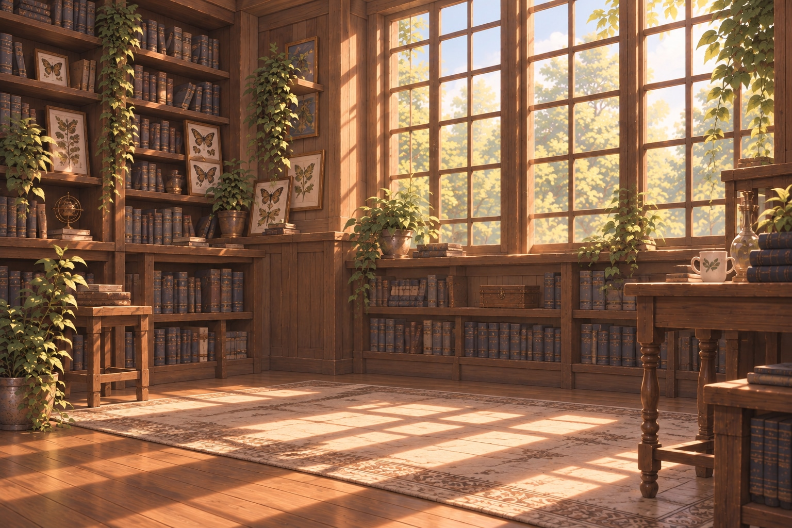

01 初次見面
先坐吧，茶還熱著。
肉乾……這個要看交情。
我在學院做生態觀察。會把動物的小動作畫進手帖，也會為了一個奇怪的腳印蹲上好一會兒。曬到太陽的時候，進度可能會慢一點。
不熟的時候話不算多，熟了就不一定。歪理可以講，我會挑最好笑的那句回你。
- 名字
- 小夜 Xiaoye
- 族群
- 藪貓獸裔
- 工作
- 學院生態觀察員
- 生日 / 年齡
- 05.12 / 22 歲
I.
會讓我停下來
動物的小動作、自然筆記，還有一場剛好想玩的遊戲。
II.
喜歡，別偷走
暖暖的窗邊、肉乾、魚和午睡。安靜地一起待著，也很好。
III.
熟悉以後才知道
想事情時，尾尖比表情先動。被戳穿偷懶時，會先換個姿勢。
02 我的三種模樣
換個模樣，還是我。
斑紋、眼神和一點小脾氣，
都一起帶過來了。
看完整立繪 ↗

FORM 01 / BEASTKIN
平常的我
人類五官與手腳，搭配頭頂的藪貓耳和環紋尾巴。暖金棕斑點長髮與琥珀眼，是熟悉的記號。
「耳朵有在上班，本人不保證。」


三視圖 · 表情差分03 日常一隅
今天的普通，
也想收好。
沒有什麼大事。
有陽光、有書，偶爾有點不想動。






從手帖翻出一句
「又」這個字很有偏見欸。我這次有換個姿勢。
小夜的小語錄 · 角色台詞選頁
看完了？
來聊點別的。
照片、碎碎念，還有突然想分享的小發現，
都放在這裡。喜歡哪一邊，就在哪一邊坐下。
那我先去窗邊了。你慢慢看。小夜